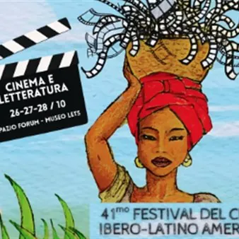

da lun 26 ott a mer 28 ott
Lets Eventi - Cinema e Letteratura
Il 41° festival del cinema ibero-latino americano torna a museo LETS. Dal 26 al 28 ottobre cinque proiezioni a ingresso gratuito in Spazio Forum Sullo schermo opere e figure di José Donoso, Daniel Defoe, Gabriel García Márquez, Elena Poniatowska e José Lezama Lima. Ad aprire la…
 Indicazioni
Indicazioni
- Costi e prenotazioni
- Costo non indicato · Prenotazione non indicata
- Programma
- Programma da verificare. Apri la fonte ufficiale per orari e possibili aggiornamenti.
- In caso di maltempo
- Nessuna indicazione specifica pubblicata.
- Note
- Acquisito automaticamente dalla fonte.
L’EVENTO
Descrizione completa
Il 41° festival del cinema ibero-latino americano torna a museo LETS.
Dal 26 al 28 ottobre cinque proiezioni a ingresso gratuito in Spazio Forum Sullo schermo opere e figure di José Donoso, Daniel Defoe, Gabriel García Márquez, Elena Poniatowska e José Lezama Lima. Ad aprire la sezione, lunedì 26 ottobre alle ore 16.00, sarà Coronación di Silvio Caiozzi (Cile, 2000, 140′), tratto dall’omonimo romanzo di José Donoso.
Due le proiezioni di martedì 27 ottobre. Alle 15.00, El año de la peste di Felipe Cazals (Messico, 1979, 109′) trasferisce nel Messico contemporaneo il Diario dell’anno della peste di Daniel Defoe, attraverso una sceneggiatura alla quale lavorò anche Gabriel García Márquez. Alle 17.15 segue O veneno da madrugada di Ruy Guerra (Brasile/Argentina/Portogallo, 2005, 118′), adattamento cinematografico di La mala hora di García Márquez.
Mercoledì 28 ottobre, alle 15.00, sarà la volta di De noche vienes, Esmeralda di Jaime Humberto Hermosillo (Messico, 1997, 103′), tratto dal racconto De noche vienes di Elena Poniatowska.
Chiude la sezione, alle 16.45, Lezama Lima: soltar la lengua di Ernesto Fundora H. (Messico/Cuba, 2019, 120′), documentario che ripercorre la vita e l’opera di José Lezama Lima, una delle figure centrali della letteratura cubana del Novecento.
Tutti i saranno proiettati in versione originale con sottotitoli in italiano.
L’ingresso in Spazio Forum di LETS è gratuito e libero fino ad esaurimento posti.
IL PROGRAMMA
Programma e orari
Appuntamenti raccolti dalle fonti elencate. Dove manca un orario, non è ancora disponibile in questa scheda.
Programma pubblicato
- Dal 2026-10-26 al 2026-10-28
INFORMAZIONI UTILI
Prima di partire
- Controllare la fonte prima di partire.
ORGANIZZAZIONE